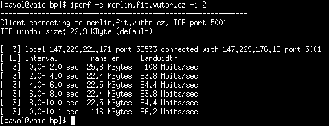
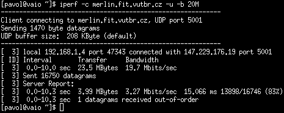

Iperf
Iperf bol vyvinutý ako moderná utilita na meranie TCP a UDP priepustnosti. Veµkou výhodou je, ¾e ho nájdeme vo väè¹ine dostupných balíèkových repozitároch, èo znaène urýchµuje in¹taláciu. V dne¹nej dobe patrí medzi najpou¾ívanej¹ie nástroje na meranie sie»ových parametrov.Zdroje a základne spustenie
Domovská stránkaLink na stiahnutie - Pou¾itá verzia 2.0.5
Architektúra klient-server, iperf -c, iperf -s.
Príklad základného spustenia klienta a servera:
$ iperf -c <adresa>
$ iperf -s
Uká¾ka testov
Test TCP priepustnosti, výpis výsledkov ka¾dé 2 s.
$ iperf -c adresa

Test UDP priepustnosti do hodnoty 20 Mbps.
$ iperf -c adresa -u -b 20M

Nekorektné správanie
Na obrázku z výstupu programu Iperf pri UDP testovaní je mo¾né vidie», ¾e bol prijatý jeden paket v nesprávnom poradí. Toto chybové hlásenie sa vyskytuje v¾dy ak zahájime UDP test s priepustnos»ou väè¹ou ako je 3 Mbit/s - parameter
-b 3M.
Niekedy sa nezobrazí výstup s informáciami o UDP priepustnosti, ktoré
posiela server klientovi, tak¾e zobrazená priepustnos» je iba
s klientovej strany, ktorá mô¾e obsahova» nesprávne informácie.
Vybrané prepínaèe
| Parameter | Popis |
|---|---|
| Základne | |
-h, --help |
výpis nápovedy |
-v, --version |
výpis verzie |
-s |
mód servera |
-c <dómena> |
mód klienta, doména ¹pecifikuje adresu, alebo doménové meno na ktorom be¾í server |
-D, --deamon |
spustí server na pozadí |
| Nastavenie spojenia | |
-p, --port <èíslo> |
¹pecifikácia portu |
-V |
pou¾ije protokol IPv6 |
-u, --udp |
pou¾ije UDP protokol namiesto TCP |
-b, --bandwith <èíslo>[KM] |
pou¾itie iba s -u, bude testova» do maximálnej priepustnosti (implicitne 1 Mbps) |
-P, --parallel <èíslo> |
vytvorí paralelné testovacie spojenia |
| ©pecifikácia výpisov | |
-f, --format [kmKM] |
nastaví jednotky výpisu |
-i, --interval <èíslo> |
periodické výpisy výsledkov v sekundách |
-m, --print_mss |
vypí¹e TCP MSS a MTU |
| Nastavenie prená¹aných dát | |
-F, --fileinput <cesta> |
prená¹ane dáta zoberie zo súboru |
-I, --stdin |
prená¹ane dáta zoberie zo ¹tandardného vstupu |
| Obojsmerné testovanie | |
-d, --dualtest |
obojsmerný test v súèasnom èase |
-r, --tradeoff |
obojsmerný test individuálne |